One viewer, a mode per drawing type
Pick a drawing from the strip at the top and the tools change to suit it. A unit picked on one drawing can be found on the others: from the schematic to where it sits on the wall, or from the floor plan to its connections.
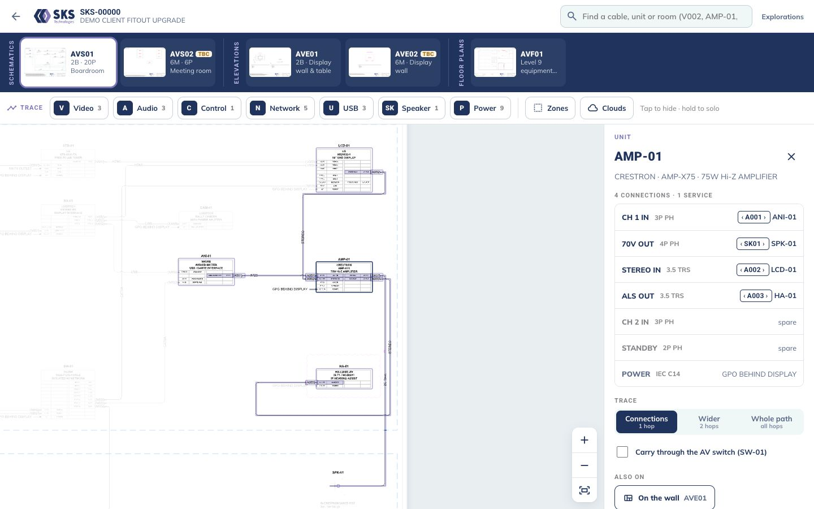
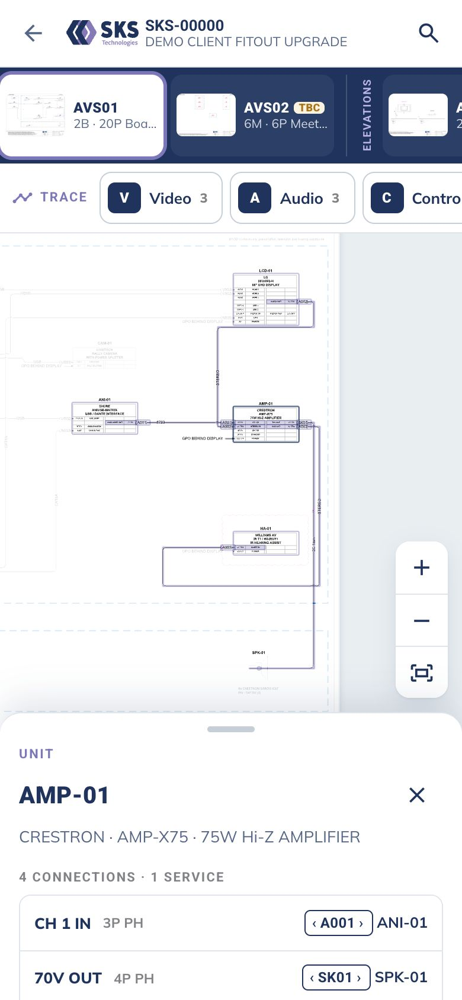
timelineSchematics: trace
Tap a wire for that cable only, with its physical label and both ports. Tap a unit for every connection, then widen to two hops or the whole signal path. Signal chips (V · A · C · N · U · SK · P) hide classes; hold one to show only that class.
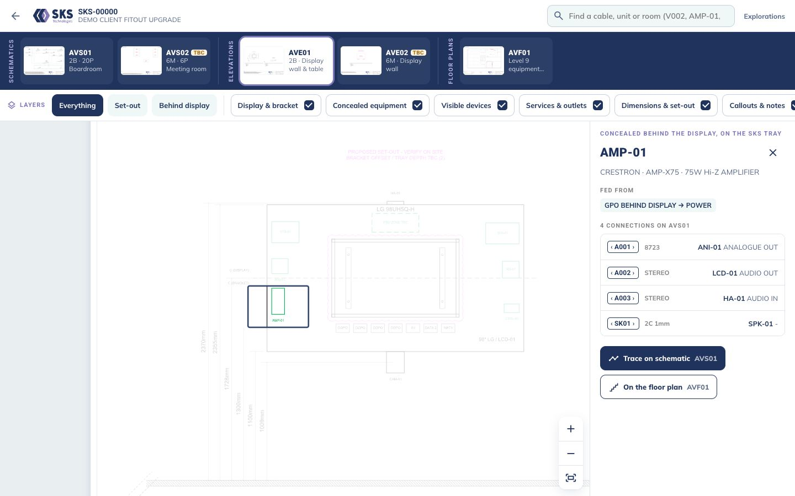
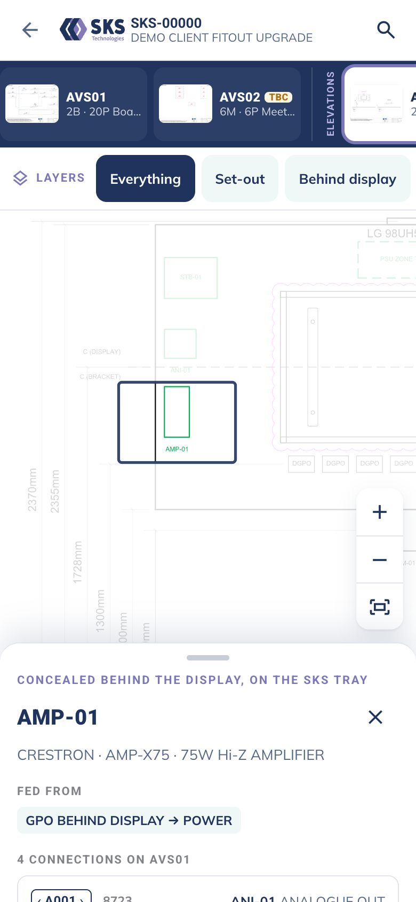
layersElevations: layers
Show or hide the display and bracket, concealed kit, visible devices, outlets, dimensions, notes and clouds, or use the presets: Set-out, Behind display. Tap a unit to see what feeds it and jump to its trace.
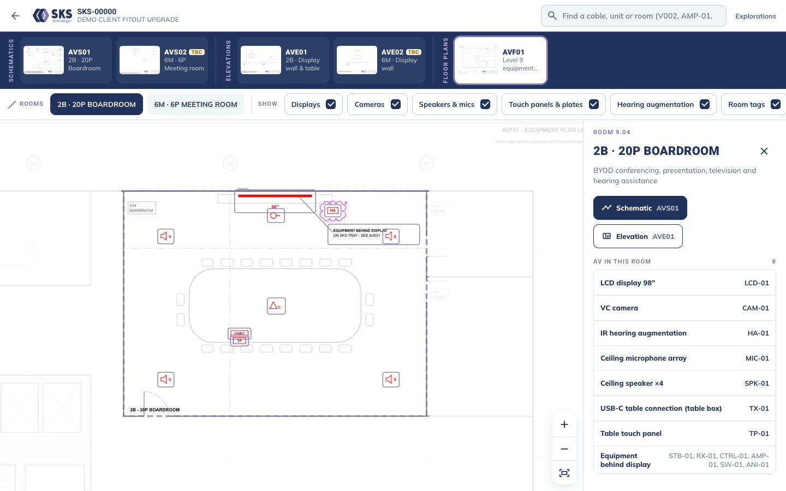
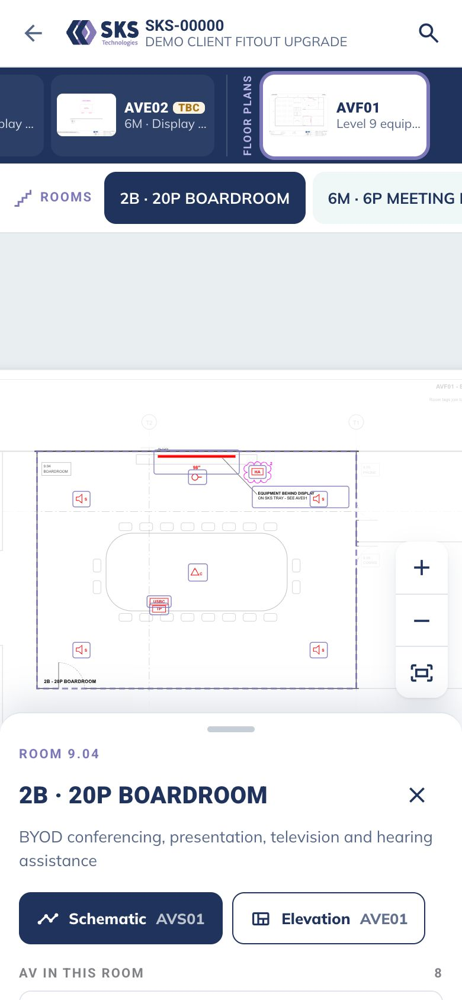
floorFloor plans: rooms
Tap a room for its AV and its sheets. Show only displays, speakers, cameras or touch panels. Symbols carry no IDs (SKS convention), but tapping one finds the unit on the schematic and on the wall.
Schematic trace explorations
Five earlier takes on schematic tracing, each pushing one idea, mostly about running it one-handed on site. The best parts went into the viewer's schematic mode. They're kept here for comparison.
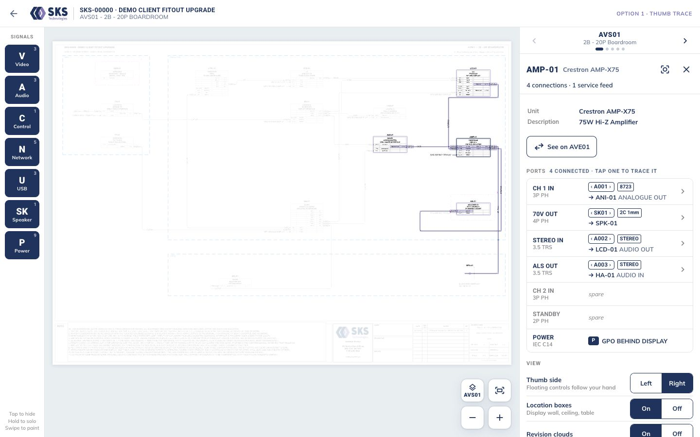
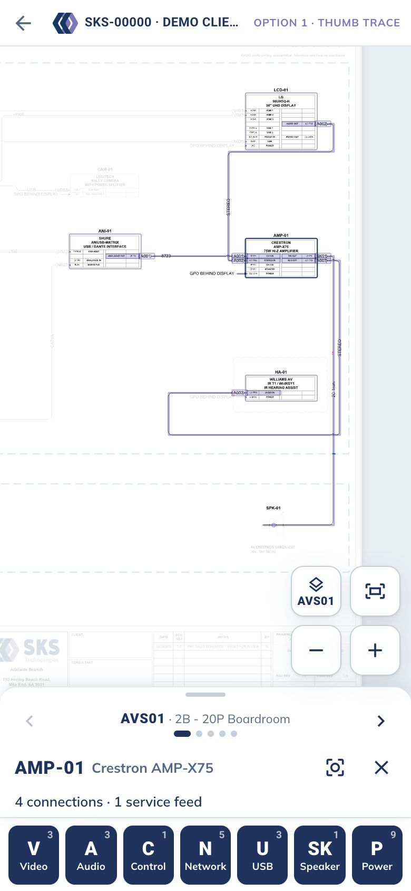
1Thumb Trace
A signal dock of chip-prefix keys (V · A · C · N · U · SK · P) at the bottom of the screen. Tap to hide a class, hold to solo it, or sweep a finger across to paint several. Left- or right-handed.
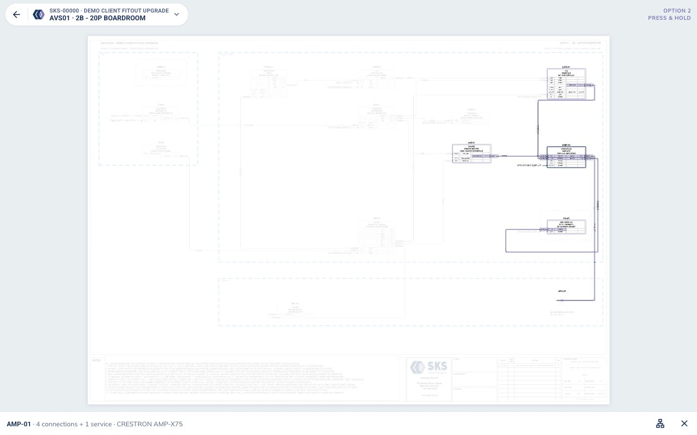
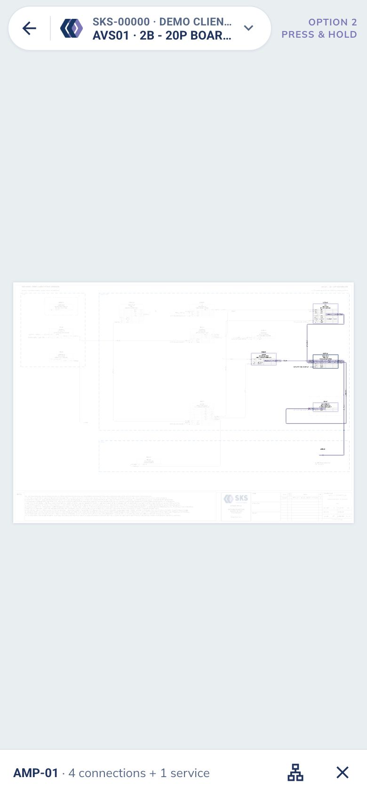
2Press & Hold
No toolbars, just the drawing. Press and hold anywhere for a radial menu under your thumb that knows what it's on: a cable, a unit or empty space.
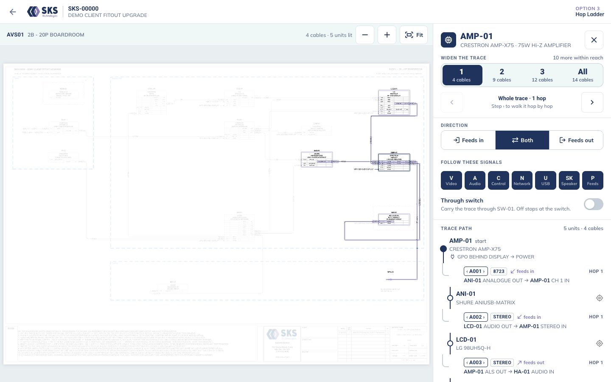
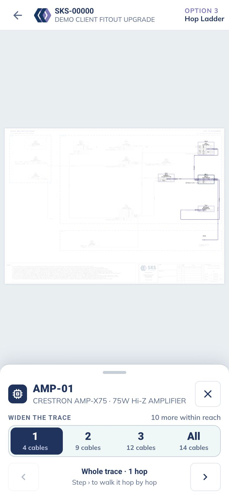
3Hop Ladder
Start from a unit, then widen the trace one hop at a time, upstream, downstream or both, and step through it as a subway line of units and cables.
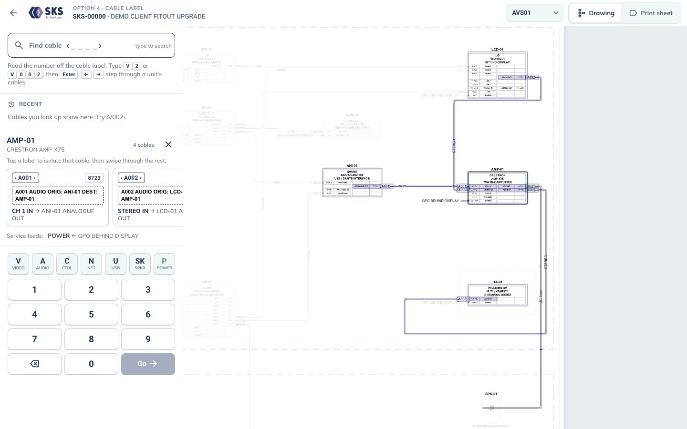
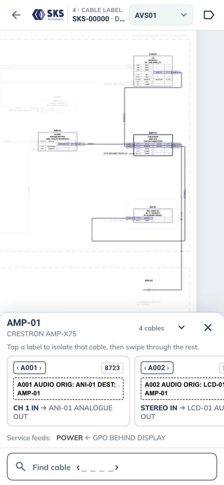
4Cable Label
Type the number off the cable in your hand (V002) on a thumb keypad. You get the label card, both ends and ports, and can swipe through every cable on that unit.
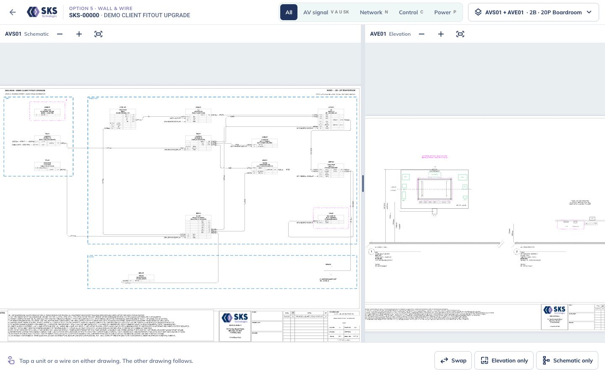
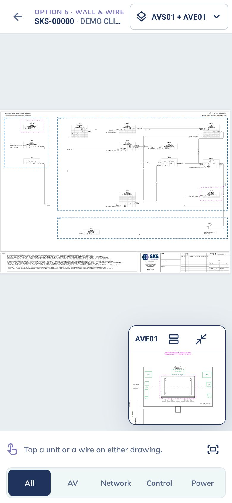
5Wall & Wire
Schematic and wall elevation linked. Tap a unit to see what it connects to and, at the same time, where it physically sits: behind the display, in the table box, plus its GPO feed.
How it works
There's no redrawing and no Visio on the server. The kit already produces everything the viewer needs. The floor plan is the one exception: this job has none, so AVF01 is a demo sheet drawn in the SKS equipment-plan style with the real title block.
MOD_* group is a unit, its rows are port cells, and connectors are glued to number chips (V001, N003) with the cable type on the line.Circuit, From device, From port, To device, To port, Cable) is what makes every end land on the right port. Two kit additions would make the next round even better: cable length, and an install/test status per circuit. With those, the trace can show "pulled · terminated · tested" along the path.